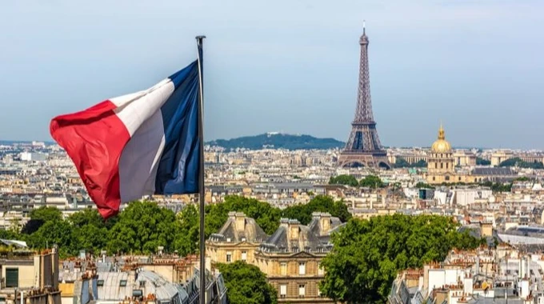
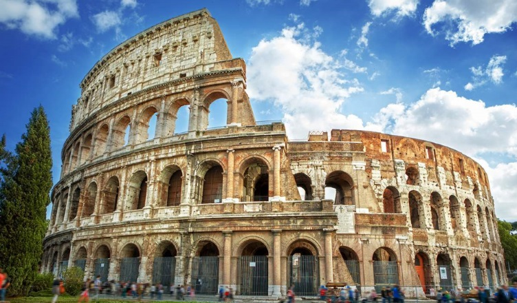
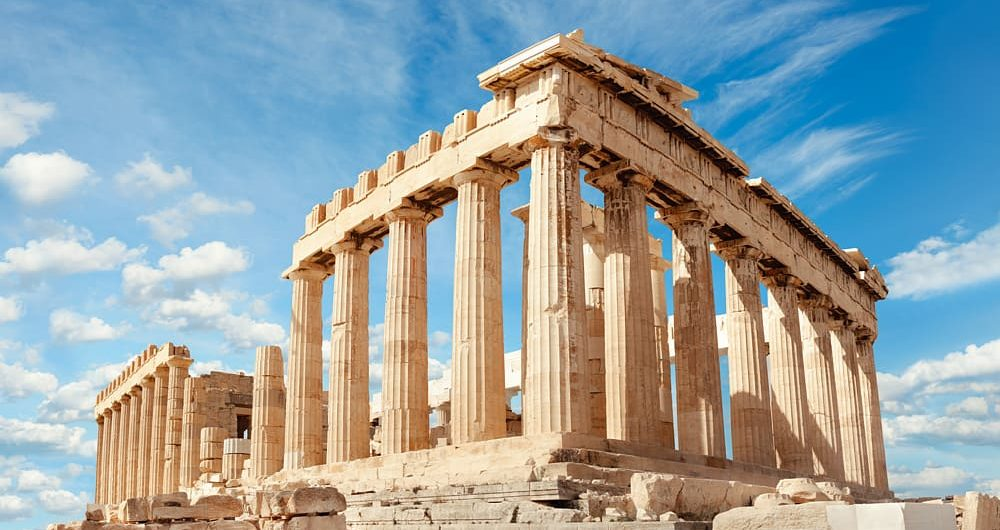

Захоплююча подорож Європою
Маршрути
Подорожі - це неймовірний спосіб розширити свій світогляд, пізнати нові культури та створити незабутні спогади. Європа, з її багатою історією, різноманітними традиціями та чудовою архітектурою, завжди була і залишається одним з найпопулярніших напрямків для мандрівників з усього світу. У цій розповіді ми поділимося враженнями від подорожі трьома захоплюючими країнами: Францією, Італією та Грецією.
Перед тим як розпочати нашу подорож, давайте надихнемося чудовим віршем Анна Вітрової про мандри:
Дороги кличуть, серце рветься,
У далечінь душа сміється.
Нові міста, нові країни,
Чарівні звуки, дивні зміни.
Європа жде - краса одвічна,
Історія її велична.
Тож вирушаймо у дорогу,
Відкриймо світу перемогу!
- Анна Вітрова, Мандрівник
Франція

Наша європейська подорож почалася з чарівної Франції. Париж, столиця країни, зустрів нас своєю незабутньою атмосферою романтики та витонченості. Ейфелева вежа, величний символ міста, вражає своєю грандіозністю, особливо вночі, коли вона сяє тисячами вогнів.
Лувр, один з найбільших музеїв світу, заворожує своєю колекцією мистецтва. Мона Ліза Леонардо да Вінчі залишається головною зіркою, але й інші експонати не менш вражаючі. Прогулянка вздовж Сени, відвідування Нотр-Дама та насолода справжніми французькими круасанами в затишному кафе - все це створює неповторну паризьку магію.
Після Парижа ми вирушили до сонячного Провансу. Лавандові поля, середньовічні села та смачна місцева кухня зробили цю частину подорожі незабутньою. Особливо запам'яталось відвідування:
- Авіньйону з його Папським палацом
- Арля, де творив Ван Гог
- Живописного села Горд
Італія

Наступною зупинкою стала Італія - країна неймовірної історії, мистецтва та гастрономії. Рим, "Вічне місто", вразив нас своєю величчю та багатовіковою історією. Колізей, Форум та Пантеон переносять відвідувачів у часи Римської імперії. Ватикан з Сікстинською капелою та собором Святого Петра залишає незабутнє враження навіть на найдосвідченіших мандрівників.
Флоренція, колиска Ренесансу, зачарувала нас своєю архітектурою та мистецтвом. Галерея Уффіці, собор Санта-Марія-дель-Фйоре та міст Понте Веккіо - лише деякі з численних скарбів цього міста. Тосканські пейзажі з їх пагорбами, виноградниками та оливковими гаями створюють ідеальне тло для романтичної подорожі.
Венеція - місто на воді, яке здається майже казковим. Прогулянки вузькими вуличками, поїздки на гондолах каналами та відвідування площі Сан-Марко залишають незабутні враження. Найцікавіші місця Венеції:
- Палац Дожів
- Міст Ріальто
- Острів Мурано, відомий своїм склом
Греція

Завершальним акордом нашої подорожі стала Греція - колиска західної цивілізації. Афіни, столиця країни, вражає своїми давніми пам'ятками. Акрополь з Парфеноном є символом не лише міста, але й всієї античної культури. Прогулянка по району Плака з її вузькими вуличками та традиційними тавернами дозволяє відчути справжній дух Греції.
Після Афін ми вирушили на острови. Санторіні з його білосніжними будиночками та блакитними куполами церков став справжнім фотографічним раєм. Захід сонця в Ої - одне з найкрасивіших видовищ, які можна побачити в Європі. Міконос зачарував нас своїми вітряками та яскравим нічним життям.
Наша подорож Грецією включала:
-
Дельфи
- Храм Аполлона
- Дельфійський оракул
- Античний театр
-
Олімпія
- Храм Зевса
- Стадіон древніх Олімпійських ігор
-
Острови
-
Крит
- Палац Кноса
- Пляж Елафонісі
-
Родос
- Старе місто
- Палац Великих магістрів
-
Крит
Порівняння відвіданих країн
| Критерій | Франція | Італія | Греція |
|---|---|---|---|
| Кухня | Вишукана | Різноманітна | Традиційна |
| Пляжі | Рів'єра | Амальфі | Острови |
| Історія | Середньовічна | Антична/Ренесанс | Антична |
| Мистецтво | Імпресіонізм | Ренесанс | Класичне |